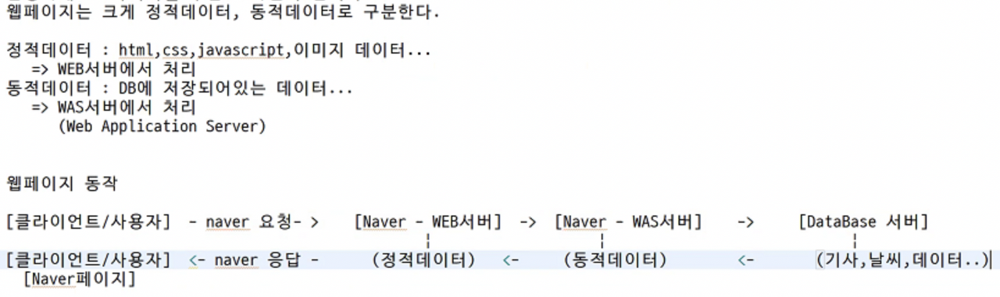

웹페이지 기초
🔸 웹페이지에는 정적데이터와 동적데이터가 있다.
- 네이버 홈페이지에 접속하면 보이는 이미지 데이터들은
정적데이터 -
HTML, CSS, JavaScript, … => WEB 서버에서 처리
- 신문 기사, 날씨, 코스피 지수 등 변하는 값들은
동적데이터 - DB에 저장되어 있는 데이터 =>
WAS(Web Application Server - web에 application이 추가된 것)서버에서 처리- 예) 톰캣이라는
서버에서자바 애플리케이션이 실행되고 있는 것
- 예) 톰캣이라는
🔸 웹페이지 동작
[클라이언트/사용자]가 naver에 요청 ➡️[naver - WEB서버]가 판단해서 요청한 데이터가정적데이터만 있다면 바로 실행하게 만듦 ➡️[클라이언트/사용자]에게 naver가 응답(정적데이터)-
👉 이 결과로 사용자는 naver 페이지를 볼 수 있게 된다.
- 하지만
동적데이터도 있다면… - naver가
[naver서버 - WAS서버]에동적데이터를 요청한다. -
그러면
[Database서버]에 데이터를 요청해서 사용자에게 보여준다.
 - +) .com, .co.kr 과 같은 도메인은 비싸다.
- .ar 같은 도메인들은 무료
🔸 DNS
도메인 네임서버- IP주소를 도메인 주소로 바꾼 것
- 숫자로 된 IP주소는 외우기 힘드니까 좀 더 읽기 쉬운 문자형 주소로 바꾸는 것